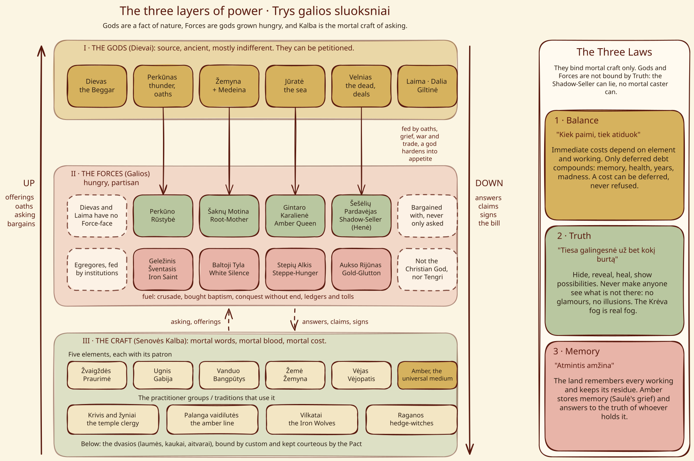

Šaknų Motina (Root-Mother)¶
Where she sits¶


The three layers of power¶
Gods harden into Forces; mortals can only ask or bargain.
Šaknų Motina (Root-Mother)

Šaknų Motina (Root-Mother) · force¶
Type |
force |
Origin |
Native (face of a god) |
Note |
Ancient forest consciousness dwelling in the Dykra wilderness; mother of wolves. |
Nature¶
Native Force: the wild grief of Žemyna and Medeina, fused during the 13th-century crusades. She took shape when the Order emptied Sudovia (1277–83) and made the Dykra her body (Book VI ch. 9).
Wants¶
The forest kept; plough, axe and iron stopped. She hates the knights’ iron and the cities’ stone, and chooses not a prince but “what a prince can give her” (Book V ch. 11).
Takes (its price)¶
The Amber Debt: royal blood for land lost. Her servants pay in parts: Eglė’s price, “never sell the forest”, falls due at Salynas (Book II ch. 19); wolves leave part of the soul in the bog (rite in the Iron Wolves §4); Galminas’s body. “Kas neiškils, tas liks”: whoever does not rise from the mud stays (Book III ch. 9).
Signs & manifestations¶
Groans in the earth, roots shifting, sap turning red before a massacre, crows leading columns, a whisper that is leaves. She arrives from all sides at once, and the mouth fills with soil that smells of rain (Book III ch. 29).
Vessels, servants, claims¶
Host: Galminas, the dead žynys she reanimated, who becomes a grove at Grunwald. Servants: Eglė (Pelkių Eglė, taken in the prologue, Book I ch. 16), the Iron Wolves, the žaltys, barstukai, and devotees such as Elena, who carries her tow-knot sign (Book I ch. 12–13). Claim: Vytautas, contested with Perkūnas.
Weaknesses¶
She cannot follow onto the steppe: “no forest, no bog” at Vorskla (Book II ch. 23). Consecrated stone and the axe that comes with the priests defeat her; by 1411 she says she has nothing left to stop them (Book III ch. 29). She fades as groves are felled.
Arc across the books¶
Book VI: the Dykra is born (ch. 9). I: Elena, Eglė and the swamp (ch. 12–16). II: the debt of the forest at Salynas (ch. 19); absent on the steppe (ch. 23). III: Pilkoji, Galminas and Grunwald (ch. 7–29), her last great act. IV: she sleeps (ch. 6) and says farewell through Eglė (ch. 27). V: she returns and courts Švitrigaila (ch. 11), reclaims the abandoned groves (ch. 28).
Relations
Claims: Vytautas (1382–1430) — Contested with Perkūnas.
Force-face of: Medeina · Žemyna
Patron of: Vilkatai (Iron Wolves) · Vilkų krikštas (wolf-change)
Servants: Barstukai (under-elder miners) — Her diggers of bog-ore and amber. · Eglė (vaidilutė → Pelkių Eglė) (1382–…) · Žaltys (household grass snake) — Her ear inside the house.
Shards: Girinis / miškinis (grove-keepers) — Local face of the Root-Mother.
Vessels: Galminas
Nature Native Force (Layer II). Not a synonym for Žemyna
Born of The wild grief of Žemyna and Medeina, fused in the 13th-century crusades, when the Order emptied Sudovia (1277-83) and she made the Dykra her body
Vessels Galminas, the dead žynys she reanimated, who becomes a grove at Grunwald. Servants: Pelkių Eglė, the Iron Wolves, the žalčiai, the barstukai, devotees such as Elena. Claim: Vytautas, contested with Perkūnas
Wants The forest kept; plough, axe and iron stopped. She hates the knights' iron and the cities' stone
Takes The Amber Debt, royal blood for land lost. Her servants pay in parts: Eglė's price (never sell the forest), a wolf's part of the soul left in the bog, Galminas's body
Signs Groans in the earth; roots shifting at night; sap turning red before a massacre; crows leading columns; a whisper that is leaves; soil in the mouth that smells of rain
Weaknesses She cannot follow onto the steppe (no forest, no bog). Consecrated stone and the axe defeat her. She fades as groves are felled
Partisan grief. A god's attention hardened into appetite and agenda. She is bargained with, never merely petitioned, and she remembers every bargain.
Contested claims. She chooses not a prince but what a prince can give her (Book V ch. 11). Perkūnas also claims Vytautas.
Iron. Bog-iron is her own metal. Smith's iron and feast-day iron hurt her spirits.
The Dykra. The swamp-forest belt between Krėva and the Neman: bog-islands and sunken paths. Strongest wherever old forest stands unfelled, and in the oldest bog.
Where she fails. Open steppe, consecrated stone, felled groves. By 1411 she says she has nothing left to stop them.
Book I. Elena, Eglė and the swamp eat Skirgaila's trackers (ch. 12-16).
Book II. The debt of the forest falls due at Salynas (ch. 19). She is absent on the steppe (ch. 23).
Book III. Pilkoji, Galminas and Grunwald: her last great act (ch. 7-29). The mouth fills with soil that smells of rain.
Book IV. She sleeps (ch. 6) and says farewell through Eglė (ch. 27).
Book V. She returns, courts Švitrigaila (ch. 11), reclaims the abandoned groves (ch. 28).
Book VI. The Dykra is born (ch. 9).
Connections¶
graph LR
barstukai["Barstukai (under-elder miners)"]
egle["Eglė (vaidilutė → Pelkių Eglė)"]
galminas["Galminas"]
girinis["Girinis / miškinis (grove-keepers)"]
iron_wolves["Vilkatai (Iron Wolves)"]
medeina["Medeina"]
root_mother["Šaknų Motina (Root-Mother)"]
vytautas["Vytautas"]
wolf_change["Vilkų krikštas (wolf-change)"]
zaltys["Žaltys (household grass snake)"]
zemyna["Žemyna"]
root_mother -->|Force-face of| zemyna
root_mother -->|Force-face of| medeina
root_mother -->|Claims| vytautas
root_mother -->|Patron of| iron_wolves
root_mother -->|Patron of| wolf_change
galminas -->|Vessel of| root_mother
egle -->|Servant of| root_mother
zaltys -->|Servant of| root_mother
barstukai -->|Servant of| root_mother
girinis -->|Shard of| root_mother
style root_mother stroke-width:3px